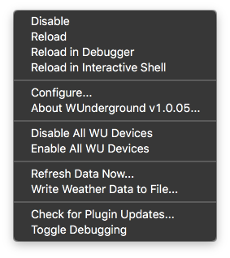

The WUnderground plugin allows users to create Indigo Home Control Server devices which provide a facility to create individual weather devices that will be linked to
Weather Underground. The plugin provides a bridge between the Weather Underground API service and Indigo.
Installation
Installing the WUnderground Plugin is accomplished in the same way that you would install other Indigo plugins. There are no additional steps or other Python packages that
need to be installed. From the computer where the Indigo Server resides (you can’t directly install plugins from a client machine), download the current plugin archive from
the Indigo File Library and then double-click on the archive file. Indigo will prompt you to install the plugin. Once the plugin has been successfully installed, you will
need to configure the plugin to work with your desired implementation. During installation, Indigo should present you with the Plugin Configuration dialog. If for some
reason that doesn’t happen, or if you want to make additional changes later, you can always get to the Plugin Configuration dialog by going to the Indigo main menu and
selecting Plugins —> WUnderground —> Configure
All settings that affect the plugin’s overall operations are found in the Plugin Configuration dialog. The settings are divided into six sections: Plugin Settings, Download
Settings, Value Precision Settings, Alert Logging Settings, Update Notification Settings, and Debug Settings. Let’s look at each of these in turn.
Plugin Settings - WUnderground Plugin Settings control the main aspects of plugin functionality. There are only two main plugin settings: the API Key and
Language Preference. The API key is obtained from WU directly, through its developer portal. Users must obtain their own key, and enter it into the API Key textfield. Users
should apply for the “Anvil Plan” which provides the greatest variety of data. This can be done at no cost, but the service limits the number of calls to the API (both a
per-minute limit as well as a daily limit apply. More on that later.) I strongly encourage users of the plugin to subscribe to WU’s general weather service. This
subscription is only US$10 per year and provides some support to WU for their great service and hopefully helps to keep the service alive. Users should also select their
preferred language setting. Language is an API setting; the WUnderground Plugin does not implement languages on its own—all plugin menus, settings and device states are in
English—the setting only affects the WU data returned.
Download Settings - WUnderground Plugin Download Settings control how often the plugin reaches out for new data and the total number of data downloads
per day that are allowed. The Interval Setting controls how frequently new data are requested. The default is every 15 minutes; however, users may want to download information
more or less frequently. The maximum number of downloads per day under the free plan is limited to 500, but the plugin allows users to specify another limit value (for example,
if the user chooses to pay WU for a more robust plan.) So, one weather location with a 15 minute frequency results in 96 calls to the service each day. Increasing the
download frequency to 5 minutes results in 288 calls per day. Two weather locations at 5 minutes would result in 576 calls, which would be an overage. The plugin tries to
minimize the number of calls as much as possible. It tries to make the fewest possible number of calls based on the users’ preferred settings, but the settings will always
prevail. For example, two devices with the exact same location specifier will result in only one data download. However, ‘IL/Chicago’, ‘KORD’, ‘60601’, and
‘pws:somePwsInChicago’ are all considered to be different and will result in individual API calls.
Value Precision - The value precision settings affect how select information is displayed throughout the Indigo user interface. There are presently value
precision settings for temperatures and humidities. These setting control the number of decimal places that will be displayed within the Indigo Item List and on Control Pages.
There are two settings for temperature values—one for the Indigo Item List and one for the User Interface (UI). There is one UI setting for humidity. Changing these values does
not affect the underlying value of the data; it only affects how the data are displayed.
Alert Logging - The alert logging settings control whether the WUnderground plugin will print out severe weather alerts to the Indigo Log. There are two
alert logging settings. The Log Active Alert Messages setting controls whether severe weather alerts are written to the log. Checking the box will display alerts in the log. The
Hide “No Alert” messages setting will suppress log messages when there are no active alerts. Checking the box will suppress the No Alert messages. For example, to log severe
weather alerts but hide messages when there are no active alerts, check both boxes. Regardless of the option selected, data on severe weather alerts will be retained
within the custom device states for each appropriate device.
Update Notifications - The plugin update notification settings tell the plugin to alert you when a new version of the plugin is available. To enable
notifications, check the appropriate box and enter a valid email address. This facility also requires that the user enable Indigo’s ability to send and receive email messages.
The plugin does not send messages on its own or collect any information about usage. All personal information is stored on the user’s machine.
Devices
WUnderground devices are where most of the plugin’s magic happens and there are myriad device types that the plugin supports. Each weather device type has a
custom-tailored configuration dialog that contains settings specific to the implementation for that individual type of device. As usual, we start by creating a new
Indigo device, selecting WUnderground as the Device Type. Next, select the Device Model drop-down menu and the list of currently supported devices will appear. The list
of devices is arranged alphabetically. Once you have selected the appropriate device type, you should select Edit Device Settings… Selecting the Edit Device Settings…
button will cause the device’s custom-tailored configuration dialog to appear. The available options will vary based on the type of device selected. The following
devices are presently supported within the WUnderground Plugin:
Current Weather Conditions with short-term (day/night) forecast - The WUnderground Weather Device is probably the most common type of device that you
will use within the plugin. The Weather Device contains the most comprehensive information available within a single plugin device, and contains aspects of data
supported by the other plugin device types. For example, the Weather Device type contains forecast data for the current day plus 3 future days. If the user wants
more forecast periods, then the Ten Day Forecast device should be used. The Weather Device type includes many variables related to current conditions, future
conditions and so on. The location setting controls how the associated data will be sourced, whether it is through automatic detection or explicitly specified
using any number of formats. See “Location Formats” for more information. There are additional settings for Weather Units, Display Units and Severe Weather
Alerts.
10-Day Weather Forecast - The WUnderground Ten Day Forecast Device is much like the Hourly Forecast Device. The Ten Day Forecast Device displays forecast
data for, you guessed it, the next 10 days. In this context, Day 1 is typically today and Day 2 is tomorrow. However, at some point throughout the day, we’re
no longer interested in the forecast for today, in which case Day 1 becomes tomorrow. Nonetheless, each is managed internally by WU, so we needn’t worry about
that. Like the Hourly Forecast Device, the Ten Day Forecast devices maintains data about temperature, humidity, wind, precipitation, etc. The location setting
controls how the associated data will be sourced, whether it is through automatic detection or explicitly specified using any number of formats. See “Location
Formats” for more information. There are additional settings for weather units, wind speed, wind direction and display units.
24-Hour Weather Forecast - The WUnderground Hourly Forecast Device provides weather forecast information for the next 24 hours. The 24 hour cycle begins
with the time the data are downloaded, and proceed forward for 24 1-hour increments. In other words, if the data are downloaded at 16:00, the first observation
will be for 17:00 and proceed in 1 hour increments to about 16:00 the following day. The forecast information includes data on forecast conditions, humidity,
chance of precipitation, temperatures, and wind (among others.) There are settings for weather units—for example, standard or metric—and wind direction. The
Hourly Forecast Device also includes data to support custom control page display units text and images (see Using Custom Control Page Images below for more
information.) The location setting controls how the associated data will be sourced, whether it is through automatic detection or explicitly specified using
any number of formats. See “Location Formats” for more information.
Astronomy Information - The WUnderground Astronomy Device provides information on the phase of the moon, sunrise, sunset, and associated values. There is
only one setting for the Astronomy device—location. The location setting controls how the associated data will be sourced, whether it is through automatic
detection or explicitly specified using any number of formats. See “Location Formats” for more information.
Weather Almanac - The WUnderground Almanac Device is a simple device that provides historical weather information for the specified location. The device
will report record high, normal, and record low data for temperatures in degrees F and degrees C, as well as the year in which the record took place. There are
just a couple settings for the Almanac device—including Location and Display Units. The location setting controls how the associated data will be sourced,
whether it is through automatic detection or explicitly specified using any number of formats. See “Location Formats” for more information. The display units
field is for placing custom labels and symbols with the data when it is displayed on control pages. For example, adding the degree symbol will change 12.3 to
“12.3°” and adding a units specifier “12.3 °C” for display on control pages. Any value may be placed in this field as long as it is a valid Unicode string
character.
Tide Forecast - The WUnderground Tides Device provides information on high and low tide, lunar information and other data as appropriate. Presently, data
are available for U.S. locations only (this is a limitation of WU data and not the plugin or Indigo.) The location setting controls how the associated data
will be sourced, whether it is through automatic detection or explicitly specified using any number of formats. See “Location Formats” for more information.
Image Downloader (for satellite imagery) - The WUnderground Satellite Image Downloader Device is a little bit different from the other WUnderground
devices. The purpose of this device is to manage the use of weather radar images in control pages. You might ask yourself, “Self, why would I want to use the
Satellite Image Downloader Device?” to which you would answer, “For instances where the image source might not always be available, the control page would then
be able to display the last successful downloaded image file.” In other words, to ensure that you always have a satellite image to display on your weather
control page. The location setting controls where the desired image comes from, and the destination location controls where the image will be saved. The user
should then link to this image file on the local server using the format specified in the example dialog text.
The location specified for each weather device type controls how data will be sourced for the device. The following location formats are currently supported by the
plugin:
autoip - The auto IP location parameter will attempt to provide the data that is most appropriate for the location associated with the user’s current IP
address. This address is your external IP address, and not the address of your Indigo Server. This is not always the best approach and relies extensively on how
accurate your ISP reports locations. For example, sometimes my auto IP location is several hundred miles away.
City - The format of the city location parameter will be dictated by whether your location is a U.S. city. Cities within the U.S. should format the
location as STATE/CITY_NAME and non-U.S. cities should format the location as COUNTRY_NAME/CITY_NAME. The following formats are all examples of valid formats:
CA/San_Francisco, IL/Chicago, Canada/Toronto, Canada/Quebec_City, United_Kingdom/London
Latitude/Longitude - the latitude/longitude location parameter should be entered latitude followed by longitude, with the values separated by a comma (no
spaces.) For example, the following formats are both valid: 48.86,2.29 or -33.86,151.22
ICAO Airport Station - the ICAO airport location parameter will supply data sourced to any one of a number of ICAO reporting stations—for example, KORD
(O’Hare) or CYYZ (Toronto). To find an ICAO airport locator ID for your local airport (if appropriate) go to an ICAO locator site such as
Avcodes
Personal Weather Station - Personal Weather Station location parameters are keyed to individual weather stations within the Weather Underground Personal
Weather Station network. Each weather station has a unique identifier which should be preceded by the code pws: (for example, ‘pws:KMNCHASK10)
US ZIP Code - Lastly, the US ZIP Code location parameter can be used, of the format ‘12345’. This is a Weather Underground feature and unfortunately,
other country’s parcel post locator codes are not currently supported.
Actions
There is one action defined within the plugin.
Refresh Weather Data - Invoking the refresh weather data action will force all WUnderground devices to update immediately, and this will result in one
complete API call for each location specified.
Triggers
There are currently no triggers defined within the plugin.
Refresh Weather Data - Invoking the refresh weather data action will force all WUnderground devices to update immediately, and this will result in one
complete API call for each location specified.
Menu Items

In addition to the standard plugin menu items, the WUnderground plugin also provides:
Enable/Disable All WU Devices - Selecting either of these two menu items will turn communication on or off for all WUnderground devices at once. This is
useful when trying to isolate problems. For example, making it easier to disable all devices and then re-enable them one-by-one.
Refresh Data Now - Use this function to initiate a weather data refresh cycle immediately. This is essentially equivalent to allowing the plugin to
update on its own. Selecting this function will not affect the timing of the next scheduled data refresh cycle, but it will count as a call to the API for each weather
location.
Write Weather Data to File - Use this function to write a full copy of the WU API weather data to a file. Selecting this option will reach out to WU’s
servers, and the resulting JSON data will be written to the following location: '/Library/Application Support/Perceptive Automation/Indigo 6/Logs/YYYY-MM-DD Wunderground.txt’.
This facility will likely not be needed very often, but can help in tracking down bugs. Selecting this function will not affect the timing of the next scheduled
data refresh cycle, but it will count as a call to the API for each weather location.
Check for Plugin Updates - Use this function to check for plugin updates manually. This option does not require you to enable email notification on the
Plugin Configuration menu or have email features turned on within Indigo. The results of this check will be printed to the Indigo log.
Toggle Debugging - Use this function to turn debugging on or off. If turning debug logging on, the debug level will be set to the current debug level
preference listed under the Plugin Configuration options dialog.
Framework
The framework of the entire environment as it relates to Indigo is very straightforward. Indigo talks through the plugin to the Weather Underground (WU) servers which
return formatted JSON data pertaining to individual geographic locations. Communication is bi-directional, and presently happens through routine calls using common
Python communication protocols. Plugin users choose a predefined polling interval through a standard plugin configuration setting, the plugin reaches out to the WU
servers and requests data, interprets the results and passes the results back to user-defined WUnderground devices (Indigo Custom Devices.)
Compatability
This plugin is designed to work with Indigo 6.0 and above and is therefore compatible with Python 2.6. I will do my best to account for other implementations where
possible, but sometimes I will not be able to do that when it would cause a loss of functionality or break existing frameworks. I will also work to continue to keep the
plugin current as Indigo, its Python implementation and WU API evolve over time.
Debugging
If things aren't working the way that you expect them to, turning on the debugging facility within the plugin can help us isolate the cause, and the output is
tremendously useful when reporting bugs. There are three levels of debug logging—Low, Medium and High. Selecting Low, provides a minimal amount of debug logging (still
a lot, really.) Medium provides for a pretty massive amount of logging (but keeps all sensitive data like API Keys, and email address from being displayed.) A setting
of High will allow this sensitive information to be logged, so use with care when posting log results to a public place. That’s the extent of the settings that affect
the overall operation of the plugin. But we’re still not done setting up our WUnderground Plugin implementation. Now we must create devices. Otherwise, what’s the point
of coming this far? But first, let’s discuss the WUnderground Plugin menu.
Scripting and Technical Details
Under construction.
com.fogbert.indigoplugin.wunderground
Requesting Features and Reporting Bugs
The best way to request features and to report undocumented features (bugs) is via the Indigo Forums. An alternative is to send me a Private Message via the Indigo
Forums—which is, in fact, the preferred way if your debug output contains sensitive information like IP addresses, ROM IDs and user email addresses. When reporting
bugs, it’s best to include the following information:
What version of the plugin you’re using,
What version of Indigo you’re using,
Relevant error message text (be sure to provide the full text of the error you’re seeing, and
A version of the debug log showing what was happening when the error occurred.
I will do my best to help you use the plugin, but I can only commit to providing support for the plugin itself; I can not commit to providing support for difficulties
accessing the WU site, the accuracy of WU data or other concerns external to the plugin. That said, the best way to seek support for the WUnderground Plugin is to post to
the WUnderground Indigo Forum or send me a Private Message via the forum site. I would suggest that you post questions to the forum as other users may be able to help where
I may be unable to and benefit from answers provided.